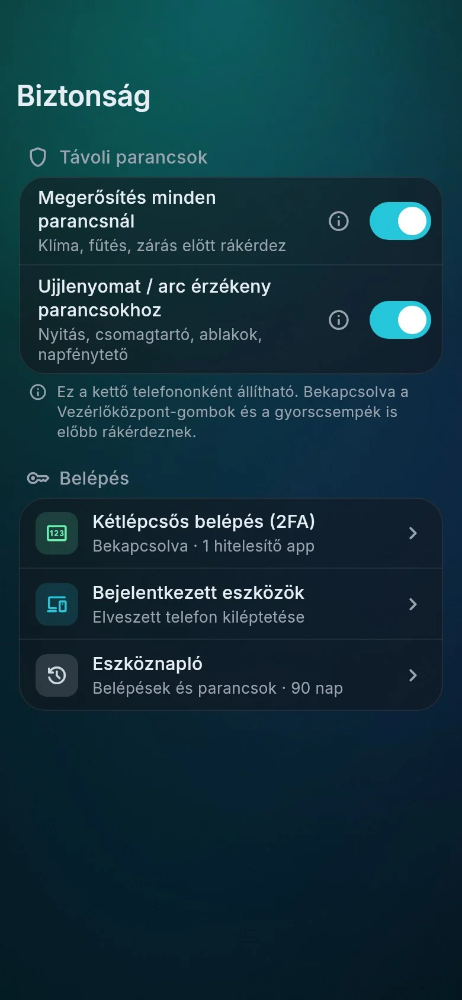
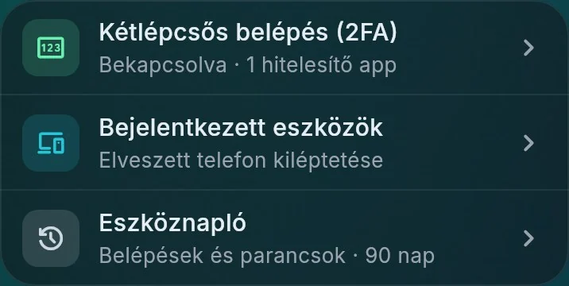
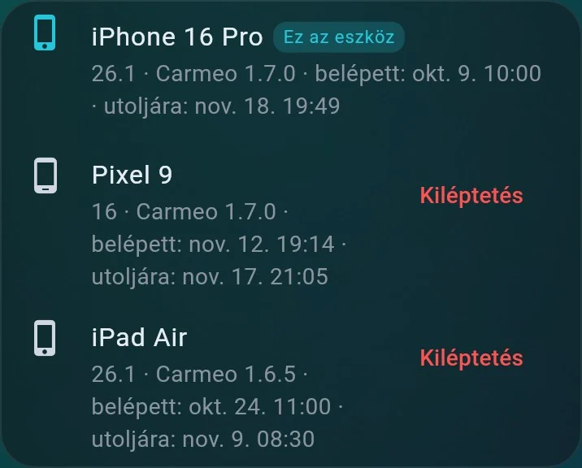
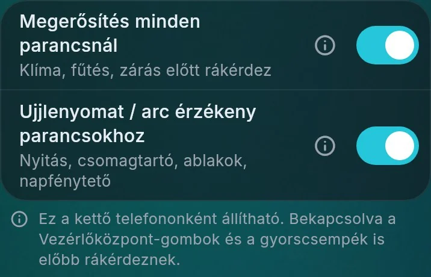
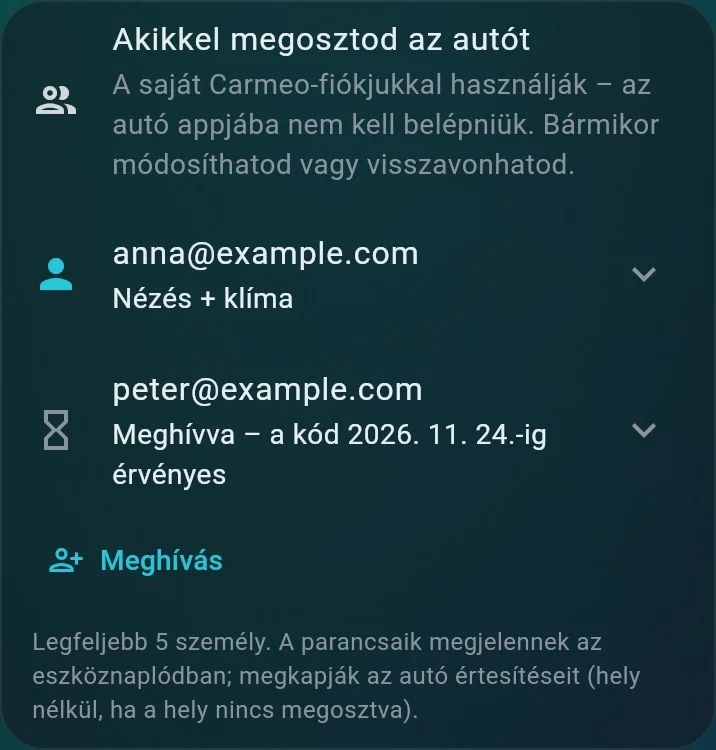
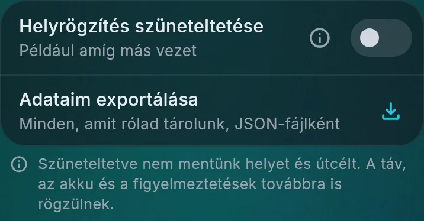

Biztonság
Olyan értékhez építve, mint az autód.
Kétlépcsős belépés, minden bejelentkezett telefon listája, zár az érzékeny parancsokon – és világos szabályok arról, mit tárol a Carmeo.



Kétlépcsős belépés és az eszközeid.
Védd a fiókodat hitelesítő appal. Látod az összes bejelentkezett telefont, az elveszettet távolról kilépteted, és minden új bejelentkezésről értesítést kapsz. Másik telefon hozzáadása egyszeri kóddal vagy QR-kóddal – jelszó nélkül; a kétlépcsős belépés kódját továbbra is kéri. Az eszköznapló megmutatja, honnan jött a parancs (widget, Siri, gyorsgomb, értesítés), és a Carmeo automatikus műveleteit a nevükön (1.8.8-tól, béta).
- Eszköznapló – belépések és parancsok eszközönként, 90 napig.
- IP-cím és hely nélkül – az eszközeidről ilyet nem tárolunk.

Még egy pillantás, mielőtt az autó kinyílik.
Kérhetsz megerősítést minden távoli parancs előtt, vagy Face ID-t, illetve ujjlenyomatot az érzékenyek előtt: nyitás, csomagtartó, ablakok és napfénytető. Automatikus zárás: ha a parkoló autó 10 percig nyitva marad, a Carmeo bezárja és szól – az időzített előfűtés előtt is. Kikapcsolható, helyenként is.

Az autót oszd meg, ne a jelszavadat.
Hívj meg legfeljebb öt embert. A saját Carmeo-fiókjukat használják, és te döntöd el, ki mit tehet: csak nézheti, nézheti és kezelheti a klímát, vagy mindent.
- A hely alapból nincs megosztva – csak akkor látják, ha bekapcsolod.
- Bármikor visszavonható – a hozzáférés abban a pillanatban megszűnik, amikor valakit eltávolítasz.

Mit tárol a Carmeo – és mit soha.
Az autós fiókod jelszavát egyszer használjuk a belépéshez az autó felhőjébe, és soha nem tároljuk. A belépési kulcsokat és a jármű PIN-kódját AES-256 titkosítással őrizzük, EU-s szervereken. Nincs reklám, nincs analitika.
- Szüneteltethető helyrögzítés – az utak ilyenkor helyek nélkül rögzülnek.
- Export vagy törlés – letöltheted mindazt, amit a Carmeo tárol, vagy törölheted a fiókodat – az appból.
Próbáld ki a saját autódon.
A Carmeo ingyenes. Csatlakozz a nyílt tesztcsoporthoz iPhone-on vagy Androidon.